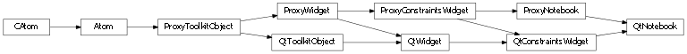
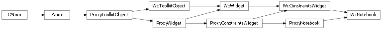

Bases: enaml.widgets.constraints_widget.ConstraintsWidget
A component which displays its children as tabbed pages.
The style of tabs to use in the notebook. Preferences style tabs are appropriate for configuration dialogs and the like. Document style tabs are appropriate for multi-page editing in code editors and the like.
The position of tabs in the notebook.
Whether or not the tabs in the notebook should be closable.
Whether or not the tabs in the notebook should be movable.
A notebook expands freely in height and width by default.
A reference to the ProxyNotebook object.

Bases: enaml.qt.qt_constraints_widget.QtConstraintsWidget, enaml.widgets.notebook.ProxyNotebook
A Qt implementation of an Enaml ProxyNotebook.
A reference to the widget created by the proxy.

Bases: enaml.wx.wx_constraints_widget.WxConstraintsWidget, enaml.widgets.notebook.ProxyNotebook
A Wx implementation of an Enaml ProxyNotebook.
A reference to the widget created by the proxy.